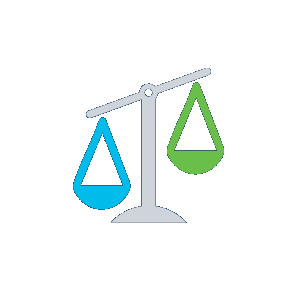

Explain the basics of being safe online, including what cybersecurity is and its potential impact.
Explain the most common cyber threats, attacks and vulnerabilities.
Explain how organizations can protect their operations against these attacks.
Access various information and resources to explore the different career options in cybersecurity.
Module 5 - Will Your Future Be in Cybersecurity?
Welcome to this module, which outlines the vast number of career opportunities that exist today in the
cybersecurity industry. With the right support and guidance, you can build the skills that many
organizations are seeking right now to help them tackle threats of the future.
And let’s not forget that there are many legal and ethical issues that arise when working in
cybersecurity. It’s critical that you understand your obligations so that you know how to do the right
thing and act within the bounds of the law.
Chapter 5.1 - Legal and Ethical Issues
5.1.1 Legal Issues in Cybersecurity
In order to protect against attacks, cybersecurity professionals must have the same skills as the
attackers. However, cybersecurity professionals use their skills within the bounds of the law.
Find out more.
Personal legal issues
At work or home, you may have the opportunity and skills to hack another person’s computer
or network. But there is an old saying, 'Just because you can does not mean you should.'
Most hacks leave tracks, which can be traced back to you.
Cybersecurity professionals develop many skills, which can be used positively or illegally.
There is always a huge demand for those who choose to put their cyber skills to good use
within legal bounds.
Corporate legal issues

Most countries have cybersecurity laws in place, which businesses and organizations must
abide by.
In some cases, if you break cybersecurity laws while doing your job, the organization may be
punished and you could lose your job. In other cases, you could be prosecuted, fined and
possibly sentenced.
In general, if you are unsure whether an action or behavior might be illegal, assume that it
is illegal and do not do it. Always check with the legal or HR department in the
organization.
International law and cybersecurity
International cybersecurity law is a constantly evolving field. Cyber attacks take place in
cyberspace, an electronic space created, maintained and owned by both the public and private
entities. There are no traditional geographic boundaries in cyberspace. To further
complicate issues, it is much easier to mask the source of a attack in cyberwarfare than in
conventional warfare.
The global society is still debating how best to deal with cyberspace. Country practice,
opinio juris (a sense on behalf of a country that it is bound to the law in question) and
any treaties drafted will shape international cybersecurity law.
In addition to working within the confines of the law, you must also be able to demonstrate ethical
behavior and act responsibly in your work.
Let’s consider an example.
5.1.2 Ethical Issues in Cybersecurity
Think back to the pen test you carried out for @Apollo. This test revealed that one of your
colleagues, who started at the same time as you, was responsible for a data breach. You are thinking
of not including this in your report as they might get in trouble.
Ask yourself the following questions to help you decide on the best course of action.
Is it legal?
Does your action comply with @Apollo policy?
Will your action be favorable for @Apollo and its stakeholders?
Would it be okay if everyone in @Apollo took this action?
Would the outcome of your action represent @Apollo in a positive light in a news headline?
5.1.3 How did you answer?
If you are able to answer ‘Yes’ to all of these questions, then it’s likely to be
appropriate to move forward with your action.
However, it's important to remember that just because something is legal, it may not be
ethical.
In this case, while withholding the information from your pen test report is not illegal, it
is not the ethical thing to do. The consequences of not reporting it could be devastating
for @Apollo and its customers.
If your response to any of these questions is ‘No,’ you should stop and reconsider your
actions, which could have serious legal ramifications for you and the organization.
In this example, you are right to question your initial thoughts. Every new finding in
cybersecurity must be reported to protect @Apollo and its customers.
Remember, always seek advice from your line manager or a legal or HR representative to
clarify if your action or behavior might be considered unethical.